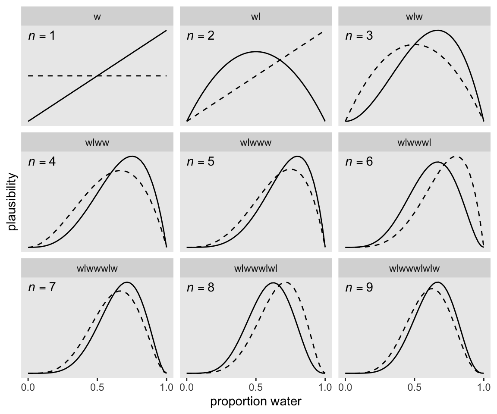
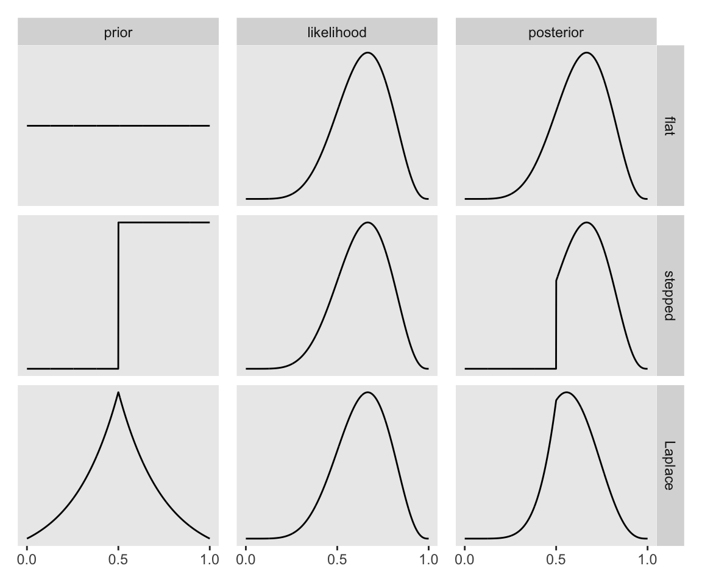
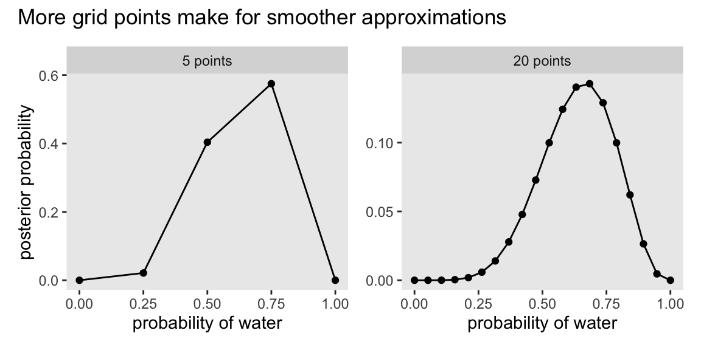
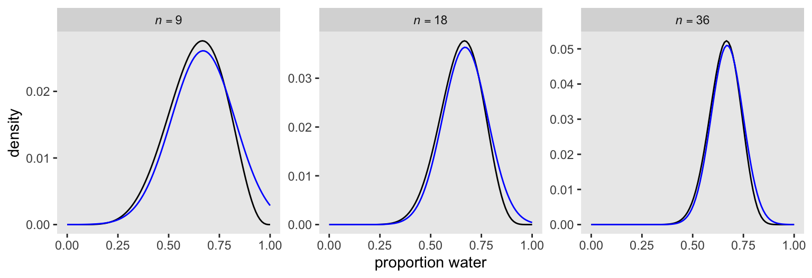
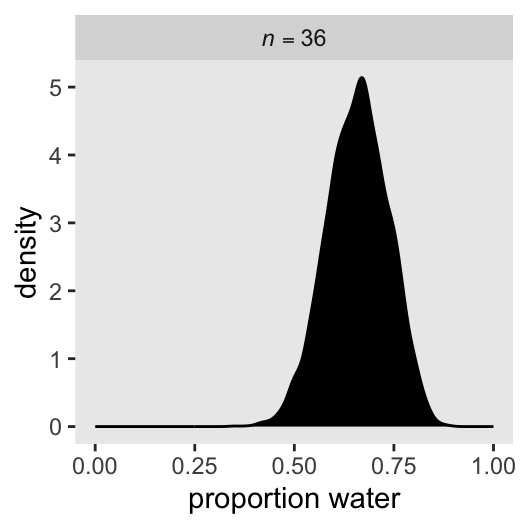
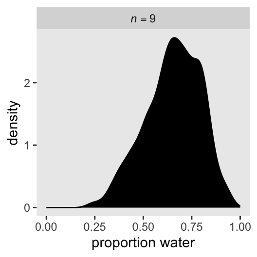

# Load
library(tidyverse)
library(patchwork)
library(rethinking)
# Remove grid lines
theme_set(
theme_gray() +
theme(panel.grid = element_blank())
)2 Small Worlds and Large Worlds
McElreath described the thrust of this chapter this way:
In this chapter, you will begin to build Bayesian models. The way that Bayesian models learn from evidence is arguably optimal in the small world. When their assumptions approximate reality, they also perform well in the large world. But large world performance has to be demonstrated rather than logically deduced. (McElreath, 2020, p. 20)
Indeed.
Load the packages and remove the plot grid lines, by default.
2.1 The garden of forking data
2.1.1 Counting possibilities.
2.1.1.1 Rethinking: Justification.
2.1.2 Combining other information.
2.1.2.1 Rethinking: Original ignorance.
2.1.3 From counts to probability.
2.1.3.1 Rethinking: Randomization.
2.2 Building a model
We might save our globe-tossing data in a tibble.
toss_vector <- c("w", "l", "w", "w", "w", "l", "w", "l", "w")
(d <- tibble(toss = toss_vector))# A tibble: 9 × 1
toss
<chr>
1 w
2 l
3 w
4 w
5 w
6 l
7 w
8 l
9 w 2.2.1 A data story.
2.2.1.1 Rethinking: The value of storytelling.
2.2.2 Bayesian updating.
Here we’ll add the cumulative number of trials, n_trials, and the cumulative number of successes, n_successes (i.e., toss == "w"), to the data.
d <- d |>
mutate(n_trials = 1:9,
n_success = cumsum(toss == "w"))
# What?
print(d)# A tibble: 9 × 3
toss n_trials n_success
<chr> <int> <int>
1 w 1 1
2 l 2 1
3 w 3 2
4 w 4 3
5 w 5 4
6 l 6 4
7 w 7 5
8 l 8 5
9 w 9 6Make Figure 2.5.
sequence_length <- 50
d <- d |>
expand_grid(p_water = seq(from = 0, to = 1, length.out = sequence_length)) |>
group_by(p_water) |>
mutate(lagged_n_trials = lag(n_trials, n = 1, default = 0),
lagged_n_success = lag(n_success, n = 1, default = 0)) |>
ungroup() |>
mutate(prior = ifelse(n_trials == 1, 0.5,
dbinom(x = lagged_n_success,
size = lagged_n_trials,
prob = p_water)),
likelihood = dbinom(x = n_success,
size = n_trials,
prob = p_water)) |>
# The next three lines normalize the prior and the likelihood,
# putting them both in a probability metric
group_by(n_trials) |>
mutate(prior = prior / sum(prior),
likelihood = likelihood / sum(likelihood)) |>
# For annotation
mutate(n = str_c("italic(n)==", n_trials),
strip = map_chr(.x = n_trials, .f =~ paste(toss_vector[1:.x], collapse = "")))
# Plot!
d |>
ggplot(aes(x = p_water)) +
geom_line(aes(y = prior),
linetype = 2) +
geom_text(data = d |>
slice(1),
aes(y = Inf, label = n),
hjust = 0, parse = TRUE, vjust = 1.5) +
geom_line(aes(y = likelihood)) +
scale_x_continuous("proportion water", breaks = 0:2 / 2) +
scale_y_continuous("plausibility", breaks = NULL) +
facet_wrap(~ strip, scales = "free_y")
If it wasn’t clear in the code, the dashed curves are normalized prior densities. The solid ones are normalized likelihoods. If you don’t normalize (i.e., divide the density by the sum of the density), their respective heights don’t match up with those in the text. Furthermore, it’s the normalization that makes them directly comparable.
2.2.2.1 Rethinking: Sample size and reliable inference.
2.2.3 Evaluate.
2.2.3.1 Rethinking: Deflationary statistics.
2.3 Components of the model
2.3.1 Variables.
2.3.2 Definitions.
2.3.2.1 Observed variables.
2.3.2.1.1 Overthinking: Names and probability distributions.
2.3.2.1.2 Rethinking: A central role for likelihood.
2.3.2.2 Unobserved variables.
2.3.2.2.1 Overthinking: Prior as a probability distribution
2.3.2.2.2 Rethinking: Datum or parameter?
2.3.2.2.3 Rethinking: Prior, prior pants on fire.
2.3.3 A model is born.
We can now describe our observed variables, \(w\) and \(l\), with parameters within the binomial likelihood, our shorthand notation for which is
\[w \sim \operatorname{Binomial}(n, p),\]
where \(n = w + l\). Our binomial likelihood contains a parameter for an unobserved variable, \(p\). Parameters in Bayesian models are assigned priors and we can report our prior for \(p\) as
\[p \sim \operatorname{Uniform}(0, 1),\]
which expresses the model assumption that the entire range of possible values for \(p\), \([0, 1]\), are equally plausible.
2.4 Making the model go
2.4.1 Bayes’ theorem.
We already know about our values for \(w\), \(l\), and, by logical necessity, \(n\). Bayes’ theorem will allow us to determine the plausibility of various values of \(p\), given \(w\) and \(l\), which we can express formally as \(\Pr(p | w, l)\). Building on some of the earlier equations on page 37, Bayes’ theorem tells us that
\[\Pr(p \mid w, l) = \frac{\Pr(w, l \mid p) \Pr(p)}{\Pr(w, l)}.\]
And this is Bayes’ theorem. It says that the probability of any particular value of \(p\), considering the data, is equal to the product of the relative plausibility of the data, conditional on \(p\), and the prior plausibility of \(p\), divided by this thing \(\Pr(W, L)\), which I’ll call the average probability of the data. (p. 37, emphasis in the original)
We can express this in words as
\[\text{Posterior} = \frac{\text{Probability of the data} \times \text{Prior}}{\text{Average probability of the data}}.\]
The average probability of the data is often called the “evidence” or the “average likelihood” and we’ll get a sense of what that means as we go along. “The key lesson is that the posterior is proportional to the product of the prior and the probability of the data” (p. 37). Figure 2.6 will help us see what this means. Here are the preparatory steps for the data.
sequence_length <- 1000
prior_vec <- c("flat", "stepped", "Laplace")
d <- tibble(probability = seq(from = 0, to = 1, length.out = sequence_length)) |>
expand_grid(row = factor(prior_vec, levels = prior_vec)) |>
mutate(prior = case_when(
row == "flat" ~ 0.5,
row == "stepped" ~ ifelse(probability < 0.5, 0, 1),
row == "Laplace" ~ exp(-abs(probability - 0.5) / 0.25) / (2 * 0.25)),
likelihood = dbinom(x = 6, size = 9, prob = probability)) |>
group_by(row) |>
mutate(posterior = prior * likelihood / sum(prior * likelihood)) |>
pivot_longer(prior:posterior) |>
mutate(name = factor(name, levels = c("prior", "likelihood", "posterior")))Now make Figure 2.6.
# Left
p1 <- d |>
filter(name == "prior") |>
ggplot(aes(x = probability, y = value)) +
geom_line() +
theme(strip.text.y = element_blank()) +
facet_grid(row ~ name, scales = "free")
# Middle
p2 <- d |>
filter(name == "likelihood") |>
ggplot(aes(x = probability, y = value)) +
geom_line() +
theme(strip.text.y = element_blank()) +
facet_grid(row ~ name, scales = "free")
# Right
p3 <- d |>
filter(name == "posterior") |>
ggplot(aes(x = probability, y = value)) +
geom_line() +
facet_grid(row ~ name, scales = "free")
# Combine, adjust, and display
(p1 | p2 | p3) &
scale_x_continuous(NULL, breaks = c(0, .5, 1)) &
scale_y_continuous(NULL, breaks = NULL)
I’m not sure if it’s the same McElreath used in the text, but the formula I used for the triangle-shaped prior is the Laplace distribution with a location of 0.5 and a dispersion of 0.25.
2.4.1.1 Rethinking: Bayesian data analysis isn’t about Bayes’ theorem.
2.4.2 Motors.
2.4.3 Grid approximation.
Continuing on with our globe-tossing example,
at any particular value of a parameter, \(p'\) , it’s a simple matter to compute the posterior probability: just multiply the prior probability of \(p'\) by the likelihood at \(p'\). Repeating this procedure for each value in the grid generates an approximate picture of the exact posterior distribution. This procedure is called grid approximation. (pp. 39–40, emphasis in the original)
We just employed grid approximation over the last figure. To get nice smooth lines, we computed the posterior over 1,000 evenly-spaced points on the probability space. Here we’ll prepare for Figure 2.7 with 20.
d <- tibble(p_grid = seq(from = 0, to = 1, length.out = 20), # Define a grid
prior = 1) |> # Define the prior
mutate(likelihood = dbinom(x = 6, size = 9, prob = p_grid)) |> # Compute the likelihood at each grid point
mutate(unstd_posterior = likelihood * prior) |> # Compute the product of likelihood and prior
mutate(posterior = unstd_posterior / sum(unstd_posterior)) # Normalize the posterior so it sums to 1
# What?
head(d)# A tibble: 6 × 5
p_grid prior likelihood unstd_posterior posterior
<dbl> <dbl> <dbl> <dbl> <dbl>
1 0 1 0 0 0
2 0.0526 1 0.00000152 0.00000152 0.000000799
3 0.105 1 0.0000819 0.0000819 0.0000431
4 0.158 1 0.000777 0.000777 0.000409
5 0.211 1 0.00360 0.00360 0.00189
6 0.263 1 0.0112 0.0112 0.00587 Here’s the code for the right panel of Figure 2.7.
p1 <- d |>
ggplot(aes(x = p_grid, y = posterior)) +
geom_point() +
geom_line() +
labs(x = "probability of water",
y = NULL) +
facet_wrap(~ "20 points")Now here’s the code for the left hand panel of Figure 2.7.
p2 <- tibble(p_grid = seq(from = 0, to = 1, length.out = 5),
prior = 1) |>
mutate(likelihood = dbinom(x = 6, size = 9, prob = p_grid)) |>
mutate(unstd_posterior = likelihood * prior) |>
mutate(posterior = unstd_posterior / sum(unstd_posterior)) |>
ggplot(aes(x = p_grid, y = posterior)) +
geom_point() +
geom_line() +
labs(x = "probability of water",
y = "posterior probability") +
facet_wrap(~ "5 points")Here we combine them, entitle, and plot!
p2 + p1 +
plot_annotation(title = "More grid points make for smoother approximations")
2.4.3.1 Overthinking: Vectorization.
2.4.4 Quadratic approximation.
Though McElreath used the quadratic approximation for the first half of the text, we won’t use it much past this chapter. Here, though, we’ll apply the quadratic approximation to the globe tossing data with the rethinking::quap() function.
globe.qa <- quap(
data = list(w = 6,
l = 3),
alist(w ~ dbinom(w + l, p), # Binomial likelihood
p ~ dunif(0, 1)) # Uniform prior
)
# Display summary of quadratic approximation
precis(globe.qa, digits = 3) mean sd 5.5% 94.5%
p 0.6666672 0.1571337 0.4155372 0.9177971In preparation for Figure 2.8, here’s the model with \(n = 18\) and \(n = 36\).
globe.qa.18 <- quap(
data = list(w = 6 * 2, # More data with same proportion
l = 3 * 2),
alist(w ~ dbinom(w + l, p), # Same likelihood
p ~ dunif(0, 1)) # Same prior
)
globe.qa.36 <- quap(
data = list(w = 6 * 4,
l = 3 * 4),
alist(w ~ dbinom(w + l, p),
p ~ dunif(0, 1))
)
# Summarize
precis(globe.qa.18, digits = 3) mean sd 5.5% 94.5%
p 0.6666662 0.1111104 0.4890902 0.8442421precis(globe.qa.36, digits = 3) mean sd 5.5% 94.5%
p 0.666667 0.07856685 0.541102 0.792232Now make Figure 2.8.
n_grid <- 100
# Wrangle
tibble(w = c(6, 12, 24),
n = c(9, 18, 36),
s = c(0.157, 0.111, 0.079)) |>
expand_grid(p_grid = seq(from = 0, to = 1, length.out = n_grid)) |>
mutate(prior = 1,
m = 0.67) |>
mutate(likelihood = dbinom(w, size = n, prob = p_grid)) |>
mutate(unstd_grid_posterior = likelihood * prior,
unstd_quad_posterior = dnorm(x = p_grid, mean = m, sd = s)) |>
group_by(w) |>
mutate(grid_posterior = unstd_grid_posterior / sum(unstd_grid_posterior),
quad_posterior = unstd_quad_posterior / sum(unstd_quad_posterior),
n = str_c("italic(n)==", n)) |>
mutate(n = factor(n, levels = str_c("italic(n)==", 9 * c(1, 2, 4)))) |>
# Plot
ggplot(aes(x = p_grid)) +
geom_line(aes(y = grid_posterior)) +
geom_line(aes(y = quad_posterior),
color = "blue") +
labs(x = "proportion water",
y = "density") +
facet_wrap(~ n, scales = "free", labeller = label_parsed)
The grid solutions are in black, and the quadratic approximations are in blue.
2.4.4.1 Rethinking: Maximum likelihood estimation.
2.4.4.2 Overthinking: The Hessians are coming.
2.4.5 Markov chain Monte Carlo.
The most popular [alternative to grid approximation and the quadratic approximation] is Markov chain Monte Carlo (MCMC), which is a family of conditioning engines capable of handling highly complex models. It is fair to say that MCMC is largely responsible for the insurgence of Bayesian data analysis that began in the 1990s. While MCMC is older than the 1990s, affordable computer power is not, so we must also thank the engineers.
Much later in the book (Chapter 9), you’ll meet simple and precise examples of MCMC model fitting, aimed at helping you understand the technique. (p. 45, emphasis in the original)
The rstan package uses a version of MCMC to fit Bayesian models. Since one of the main goals of this project is to highlight rstan, we may as well fit a model. This seems like an appropriately named subsection to do so. If you haven’t already installed rstan, you can find instructions here.
To avoid issues, we’ll detach() the rethinking package and then load rstan.
detach(package:rethinking)
library(rstan)Here we re-fit the last model from above, the one for which \(w = 24\) and \(n = 36\).
model_code <- '
data {
int<lower=1> n;
int<lower=0> w;
}
parameters {
real<lower=0, upper=1> p;
}
model {
w ~ binomial(n, p); // Likelihood
p ~ beta(1, 1); // Prior
}
'
m2.1 <- stan(
data = list(w = 24, n = 36),
model_code = model_code)We’ll cover the details of this workflow and syntax later. For now, we can display a summary of the results with print().
print(m2.1)Inference for Stan model: anon_model.
4 chains, each with iter=2000; warmup=1000; thin=1;
post-warmup draws per chain=1000, total post-warmup draws=4000.
mean se_mean sd 2.5% 25% 50% 75% 97.5% n_eff Rhat
p 0.66 0.00 0.08 0.50 0.61 0.66 0.71 0.80 1474 1
lp__ -24.94 0.02 0.73 -26.99 -25.12 -24.65 -24.47 -24.41 2039 1
Samples were drawn using NUTS(diag_e) at Wed Jul 31 17:42:32 2024.
For each parameter, n_eff is a crude measure of effective sample size,
and Rhat is the potential scale reduction factor on split chains (at
convergence, Rhat=1).There’s a lot going on in that output, which we’ll start to clarify in Chapter 4. For now, focus on the ‘p’ line, which is the summary for our focal parameter p.
To finish up, why not plot the results of our model and compare them with those from rethinking::quap(), above?
as_draws_df(m2.1) |>
ggplot(aes(x = p)) +
geom_density(fill = "black") +
scale_x_continuous("proportion water", limits = 0:1) +
facet_wrap(~ "italic(n)==36", labeller = label_parsed)
If you’re still confused, cool. This is just a preview. We’ll start walking through fitting models with brms in Chapter 4 and we’ll learn a lot about regression with the binomial likelihood in Chapter 11.
2.4.5.1 Overthinking: Monte Carlo globe tossing.
Here’s McElreath’s hand-made Metropolis algorithm for the globe-tossing example.
n_samples <- 1000
p <- rep(NA, times = n_samples)
p[1] <- 0.5
w <- 6
l <- 3
# To help make the results reproducible
set.seed(2)
for (i in 2:n_samples) {
p_new <- rnorm(n = 1, mean = p[i - 1], sd = 0.1)
if (p_new < 0) p_new <- abs(p_new)
if (p_new > 1) p_new <- 2 - p_new
q0 <- dbinom(x = w, size = w + l, prob = p[i - 1])
q1 <- dbinom(x = w, size = w + l, prob = p_new )
p[i] <- ifelse(runif(1) < q1 / q0, p_new, p[i - 1])
}The results are saved in the numeric vector p.
str(p) num [1:1000] 0.5 0.5 0.5 0.5 0.513 ...Here we put p into a data frame, and plot like before.
data.frame(p = p) |>
ggplot(aes(x = p)) +
geom_density(fill = "black") +
scale_x_continuous("proportion water", limits = 0:1) +
facet_wrap(~ "italic(n)==9", labeller = label_parsed)
2.5 Summary
Session info
sessionInfo()R version 4.4.0 (2024-04-24)
Platform: aarch64-apple-darwin20
Running under: macOS Ventura 13.4
Matrix products: default
BLAS: /Library/Frameworks/R.framework/Versions/4.4-arm64/Resources/lib/libRblas.0.dylib
LAPACK: /Library/Frameworks/R.framework/Versions/4.4-arm64/Resources/lib/libRlapack.dylib; LAPACK version 3.12.0
locale:
[1] en_US.UTF-8/en_US.UTF-8/en_US.UTF-8/C/en_US.UTF-8/en_US.UTF-8
time zone: America/Chicago
tzcode source: internal
attached base packages:
[1] parallel stats graphics grDevices utils datasets methods
[8] base
other attached packages:
[1] rstan_2.32.6 StanHeaders_2.32.7 posterior_1.6.0 cmdstanr_0.8.1
[5] patchwork_1.2.0 lubridate_1.9.3 forcats_1.0.0 stringr_1.5.1
[9] dplyr_1.1.4 purrr_1.0.2 readr_2.1.5 tidyr_1.3.1
[13] tibble_3.2.1 ggplot2_3.5.1 tidyverse_2.0.0
loaded via a namespace (and not attached):
[1] gtable_0.3.5 shape_1.4.6.1 tensorA_0.36.2.1
[4] QuickJSR_1.1.3 xfun_0.43 htmlwidgets_1.6.4
[7] processx_3.8.4 inline_0.3.19 lattice_0.22-6
[10] tzdb_0.4.0 vctrs_0.6.5 tools_4.4.0
[13] ps_1.7.6 generics_0.1.3 curl_5.2.1
[16] stats4_4.4.0 fansi_1.0.6 pkgconfig_2.0.3
[19] Matrix_1.7-0 checkmate_2.3.1 distributional_0.4.0
[22] RcppParallel_5.1.7 lifecycle_1.0.4 compiler_4.4.0
[25] farver_2.1.1 munsell_0.5.1 codetools_0.2-20
[28] htmltools_0.5.8.1 yaml_2.3.8 pillar_1.9.0
[31] MASS_7.3-60.2 rethinking_2.40 abind_1.4-5
[34] tidyselect_1.2.1 digest_0.6.35 mvtnorm_1.2-5
[37] stringi_1.8.4 labeling_0.4.3 fastmap_1.1.1
[40] grid_4.4.0 colorspace_2.1-0 cli_3.6.3
[43] magrittr_2.0.3 loo_2.8.0 pkgbuild_1.4.4
[46] utf8_1.2.4 withr_3.0.0 scales_1.3.0
[49] backports_1.5.0 timechange_0.3.0 rmarkdown_2.26
[52] matrixStats_1.3.0 gridExtra_2.3 hms_1.1.3
[55] coda_0.19-4.1 evaluate_0.23 knitr_1.46
[58] V8_4.4.2 rlang_1.1.4 Rcpp_1.0.12
[61] glue_1.7.0 rstudioapi_0.16.0 jsonlite_1.8.8
[64] R6_2.5.1